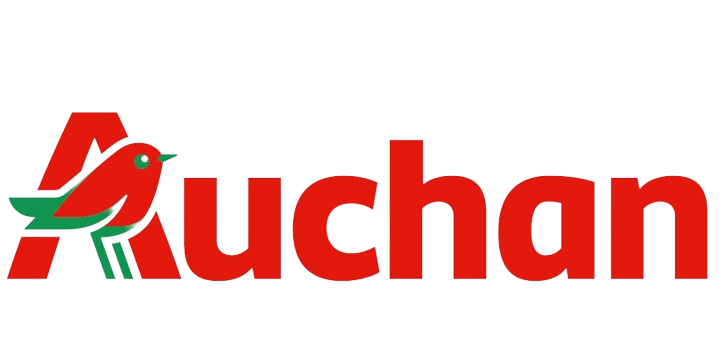
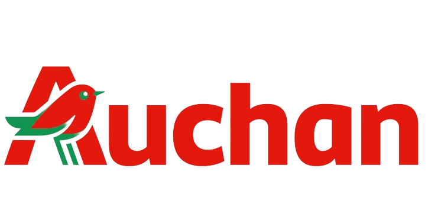

Otthoni felhasználás
Az otthoni használók számára a tűzfalak elsődleges szerepe a személyes adatok védelme és a nem kívánt hozzáférés megakadályozása. Az otthoni hálózatok gyakran tartalmaznak személyes adatokat, mint például banki információkat, e-mail fiókokat, és egyéb érzékeny adatokat. A tűzfalak segíthetnek ezeket az információkat biztonságban tartani a kíváncsi szemektől és a kártékony szoftverektől. Ezek gyakran beágyazott funkcióként jelennek meg az otthoni routerekben, vagy szoftver alapú megoldásként telepíthetők a számítógépekre és okoseszközökre.
Kis és középvállalatok
A KKV-k számára a tűzfalak kiemelten fontosak az üzleti adatok védelmében. Ezek a vállalkozások gyakran rendelkeznek érzékeny ügyfél- és pénzügyi adatokkal, amelyek védelme létfontosságú a vállalat hírneve és jogi megfelelősége szempontjából. A tűzfalak segíthetnek a szervezeteknek megvédeni hálózataikat a kártékony támadásoktól, mint például a vírusoktól, zsarolóvírusoktól és adathalász támadásoktól. Ezenkívül a tűzfalak segítségével a KKV-k szabályozhatják a hálózati forgalmat, és biztosíthatják, hogy csak a biztonságos és engedélyezett kommunikáció történjen.
Nagyvállalatok
A nagyvállalatok esetében a tűzfalak kulcsfontosságúak az összetett hálózati infrastruktúrák védelmében. Ebben a környezetben a tűzfalak nem csak alapvető biztonsági funkciókat látnak el, hanem a hálózati forgalom szabályozásában és a vállalati biztonsági politikák végrehajtásában is központi szerepet játszanak. A nagyvállalatoknak számos belső és külső hálózati kapcsolatuk van, ami különféle biztonsági kihívásokat jelent. A tűzfalak segítenek a belső hálózati szegmensek közötti forgalom szabályozásában, a hálózati eszközök és adatok védelmében, valamint a kártékony tevékenységek és fenyegetések elleni védelemben. Ezek a rendszerek gyakran magas szintű testreszabhatóságot és összetett hálózati szabályok kezelését teszik lehetővé, hogy megfeleljenek a nagyvállalati biztonsági követelményeknek.
Adatközpontok
Az adatközpontokban a tűzfalak kritikus szerepet játszanak az adatintegritás, rendelkezésre állás és az összetett hálózati architektúrák védelmében. Ezek a központok hatalmas mennyiségű adatot tárolnak és kezelnek, így a biztonságuk a legfőbb prioritás. A tűzfalak itt segítenek az adatforgalom ellenőrzésében, biztosítva, hogy csak a megbízható és engedélyezett forgalom juthasson be vagy ki az adatközpontokból. Fontos szerepet játszanak a belső és külső fenyegetésekkel szembeni védelemben, például a kibertámadások, adathalászat és más kártékony tevékenységek ellen. Ezenkívül az adatközpontokban a tűzfalak segíthetnek az összetett hálózati infrastruktúra védelmében, megakadályozva a potenciálisan káros forgalmat a kritikus rendszerek és szolgáltatások zavarásától. Ezek a rendszerek gyakran magas rendelkezésre állású és redundáns konfigurációkat igényelnek, hogy biztosítsák a folyamatos működést és az adatok elérhetőségét.
 
